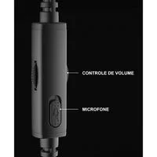
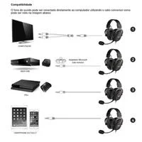

Headset Gamer Havit, Drivers 53mm, Microfone Plugável, 3.5mm, PC, PS4, XBOX ONE, Preto - HV-H2002D
Vendido e entregue por UniPeças
R$ 208,68
R$ 169,99
ou 10x de R$ 16,99 sem juros
Sobre o produto
- Tecnologia e Precisão: Alto-falantes de 53mm para áudio de alta qualidade e resposta de 20Hz~20kHz.
- Design ergonômico: Espumas super macias e estrutura reforçada contra desgaste e riscos.
- Compatibilidade ampla: Funciona com PC, PS4 e Xbox One.
- Comprimento do cabo: 1,7 metros.
✅ Em estoque